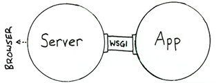

WSGI&UWSGI
WSGI协议
WSGI：全称是
Web Server Gateway Interface，WSGI不是服务器，python模块，框架，API或者任何软件，只是一种规范，描述web server如何与web application通信的规范。server和application的规范在PEP3333中有具体描述。要实现WSGI协议，必须同时实现web server和web application，当前运行在WSGI协议之上的web框架有Bottle, Flask, Django。uwsgi：与WSGI一样是一种通信协议，是uWSGI服务器的独占协议，用于定义传输信息的类型(type of information)，每一个uwsgi packet前4byte为传输信息类型的描述，与WSGI协议是两种东西，据说该协议是fcgi协议的10倍快。
uWSGI：是一个web服务器，实现了WSGI协议、uwsgi协议、http协议等。
WSGI协议主要包括server和application两部分：
WSGI server负责从客户端接收请求，将request转发给application，将application返回的response返回给客户端；
WSGI application接收由server转发的request，处理请求，并将处理结果返回给server。application中可以包括多个栈式的中间件(middlewares)，这些中间件需要同时实现server与application，因此可以在WSGI服务器与WSGI应用之间起调节作用：对服务器来说，中间件扮演应用程序，对应用程序来说，中间件扮演服务器。
WSGI协议其实是定义了一种server与application解耦的规范，即可以有多个实现WSGI server的服务器，也可以有多个实现WSGI application的框架，那么就可以选择任意的server和application组合实现自己的web应用。例如uWSGI和Gunicorn都是实现了WSGI server协议的服务器，Django，Flask是实现了WSGI application协议的web框架，可以根据项目实际情况搭配使用。

像Django，Flask框架都有自己实现的简单的WSGI server，一般用于服务器调试，生产环境下建议用其他WSGI server。
WSGI协议的实现
以Django为例，分析一下WSGI协议的具体实现过程。
1. django WSGI application
WSGI application应该实现为一个可调用对象，例如函数、方法、类(包含call方法)。需要接收两个参数：
一个字典，该字典可以包含了客户端请求的信息以及其他信息，可以认为是请求上下文，一般叫做environment（编码中多简写为environ、env） 一个用于发送HTTP响应状态（HTTP status ）、响应头（HTTP headers）的回调函数
通过回调函数将响应状态和响应头返回给server，同时返回响应正文(response body)，响应正文是可迭代的、并包含了多个字符串。下面是Django中application的具体实现部分：
class WSGIHandler(base.BaseHandler): initLock = Lock() request_class = WSGIRequest def __call__(self, environ, start_response): # 加载中间件 if self._request_middleware is None: with self.initLock: try: # Check that middleware is still uninitialized. if self._request_middleware is None: self.load_middleware() except: # Unload whatever middleware we got self._request_middleware = None raise set_script_prefix(get_script_name(environ)) # 请求处理之前发送信号 signals.request_started.send(sender=self.__class__, environ=environ) try: request = self.request_class(environ) except UnicodeDecodeError: logger.warning('Bad Request (UnicodeDecodeError)', exc_info=sys.exc_info(), extra={'status_code': 400,}) response = http.HttpResponseBadRequest() else: response = self.get_response(request) response._handler_class = self.__class__ status = '%s %s' % (response.status_code, response.reason_phrase) response_headers = [(str(k), str(v)) for k, v in response.items()] for c in response.cookies.values(): response_headers.append((str('Set-Cookie'), str(c.output(header='')))) # server提供的回调方法，将响应的header和status返回给server start_response(force_str(status), response_headers) if getattr(response, 'file_to_stream', None) is not None and environ.get('wsgi.file_wrapper'): response = environ['wsgi.file_wrapper'](response.file_to_stream) return response可以看出application的流程包括:
加载所有中间件，以及执行框架相关的操作，设置当前线程脚本前缀，发送请求开始信号；
处理请求，调用get_response()方法处理当前请求，该方法的的主要逻辑是通过urlconf找到对应的view和callback，按顺序执行各种middleware和callback。
调用由server传入的start_response()方法将响应header与status返回给server。
返回响应正文。
2. django WSGI Server
负责获取http请求，将请求传递给WSGI application，由application处理请求后返回response。以Django内建server为例看一下具体实现。 通过runserver运行django项目，在启动时都会调用下面的run方法，创建一个WSGIServer的实例，之后再调用其serve_forever()方法启动服务。
def run(addr, port, wsgi_handler, ipv6=False, threading=False):
server_address = (addr, port)
if threading:
httpd_cls = type(str('WSGIServer'), (socketserver.ThreadingMixIn, WSGIServer), {})
else:
httpd_cls = WSGIServer
# 这里的wsgi_handler就是WSGIApplication
httpd = httpd_cls(server_address, WSGIRequestHandler, ipv6=ipv6)
if threading:
httpd.daemon_threads = True
httpd.set_app(wsgi_handler)
httpd.serve_forever()
下面表示WSGI server服务器处理流程中关键的类和方法。

WSGIServer
run()方法会创建WSGIServer实例，主要作用是接收客户端请求，将请求传递给application，然后将application返回的response返回给客户端。
创建实例时会指定HTTP请求的handler：WSGIRequestHandler类
通过set_app和get_app方法设置和获取WSGIApplication实例wsgi_handler
处理http请求时，调用handler_request方法，会创建WSGIRequestHandler实例处理http请求。
WSGIServer中get_request方法通过socket接受请求数据
WSGIRequestHandler
由WSGIServer在调用handlerequest时创建实例，传入request、cientaddress、WSGIServer三个参数，``__init``方法在实例化同时还会调用自身的handle方法
handle方法会创建ServerHandler实例，然后调用其run方法处理请求
ServerHandler
WSGIRequestHandler在其handle方法中调用run方法，传入self.server.getapp()参数，获取WSGIApplication，然后调用实例(_call)，获取response，其中会传入start_response回调，用来处理返回的header和status。
通过application获取response以后，通过finish_response返回response
WSGIHandler
- WSGI协议中的application，接收两个参数，environ字典包含了客户端请求的信息以及其他信息，可以认为是请求上下文，start_response用于发送返回status和header的回调函数
虽然上面一个WSGI server涉及到多个类实现以及相互引用，但其实原理还是调用WSGIHandler，传入请求参数以及回调方法start_response()，并将响应返回给客户端。
3. django simple_server
django的simple_server.py模块实现了一个简单的HTTP服务器，并给出了一个简单的demo，可以直接运行，运行结果会将请求中涉及到的环境变量在浏览器中展示出来。
其中包括上述描述的整个http请求的所有组件:
ServerHandler, WSGIServer, WSGIRequestHandler，以及demo_app表示的简易版的WSGIApplication。 可以看一下整个流程：
if __name__ == '__main__':
# 通过make_server方法创建WSGIServer实例
# 传入建议application，demo_app
httpd = make_server('', 8000, demo_app)
sa = httpd.socket.getsockname()
print("Serving HTTP on", sa[0], "port", sa[1], "...")
import webbrowser
webbrowser.open('http://localhost:8000/xyz?abc')
# 调用WSGIServer的handle_request方法处理http请求
httpd.handle_request() # serve one request, then exit
httpd.server_close()
def make_server(
host, port, app, server_class=WSGIServer, handler_class=WSGIRequestHandler
):
"""Create a new WSGI server listening on `host` and `port` for `app`"""
server = server_class((host, port), handler_class)
server.set_app(app)
return server
# demo_app可调用对象，接受请求输出结果
def demo_app(environ,start_response):
from io import StringIO
stdout = StringIO()
print("Hello world!", file=stdout)
print(file=stdout)
h = sorted(environ.items())
for k,v in h:
print(k,'=',repr(v), file=stdout)
start_response("200 OK", [('Content-Type','text/plain; charset=utf-8')])
return [stdout.getvalue().encode("utf-8")]
demo_app()表示一个简单的WSGI application实现，通过make_server()方法创建一个WSGIServer实例，调用其handle_request()方法，该方法会调用demo_app()处理请求，并最终返回响应。
uWSGI
uWSGI旨在为部署分布式集群的网络应用开发一套完整的解决方案。主要面向web及其标准服务。由于其可扩展性，能够被无限制的扩展用来支持更多平台和语言。uWSGI是一个web服务器，实现了WSGI协议，uwsgi协议，http协议等。
uWSGI的主要特点是：
超快的性能
低内存占用
多app管理
详尽的日志功能（可以用来分析app的性能和瓶颈）
高度可定制（内存大小限制，服务一定次数后重启等）
uWSGI服务器自己实现了基于uwsgi协议的server部分，我们只需要在uwsgi的配置文件中指定application的地址，uWSGI就能直接和应用框架中的WSGI application通信。